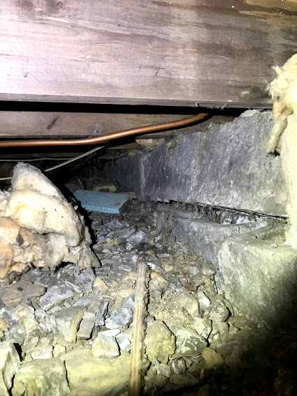

案例点评-地基墙倾斜/裂缝

案例:地基墙倾斜
- 房龄:: >70 Years
- 点评:
- 部分地基墙已经倾斜，坍塌;
- Crawlspace 地面没有防水膜。这意味着来自地下的潮气会进入楼上，同时也让房屋的木质结构（比如照片中的木梁）生霉，腐烂。尤其夏天会散发难闻的气味；
- 保温棉脱落。这意味着楼上的房间冬天冷，夏天则阴潮。
- 建议:
- 预计维修费用：>$40,000:
Crawlspace 要低于普通地下室的高度，人经常要在里爬行。所以平时人们很少进入。图片显示出三个问题:
客户要找结构工程师以及 地下室的有资质的维修服务人员，做近一步的评估